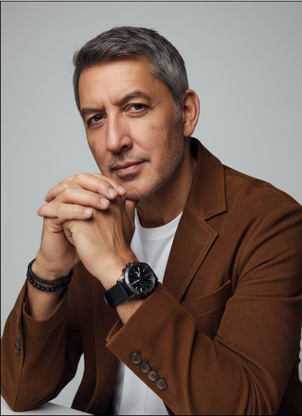

About
That's the short version. The longer one is more interesting — twenty years of business intelligence, and then a pivot.
I'm a Kwazzie — Kiwi-Australian. Red-headed Mum from Christchurch, Dad from Turangi (Tūwharetoa), who came to Australia at eighteen. I grew up here.
I spent twenty years as a business analyst and then a BI team leader — six of them inside a software company, sitting alongside developers, describing the changes I needed and working with them to get those right; the rest leading teams of my own. Most recently, seven and a half years running the data team for Thrifty Car Rental at NRMA in Sydney. Dashboards, developers, data quality, the works. The job taught me what business people actually need from technology — which turns out to be quite different from what most technology people think they need.
Here's the honest part: I don't sit down and write code line by line. What I do is describe the logic — clearly, in plain language — and direct the AI to build it, the same way I spent years directing developers. Twenty years of reading SQL, decomposing a problem, spotting the edge cases, and knowing what good output looks like turns out to be exactly the right preparation for this.
The AI writes the syntax. I bring the logical thinking, the debugging instinct, and the experience of knowing when an answer is wrong. People call this "vibe coding", which makes it sound looser than it is — a decade of running developers turned out to be excellent training for the work I do now.
Not theory — working tools, in daily use inside a real organisation. Executive financial dashboards that leadership reads every day. A voice-to-publish pipeline the whole team uses. A grants assistant. An inventory system of record.
I mention all this for one reason: it's why I can be straight with you. Having actually built these things, I know what genuinely helps and what's just hype — so I can save you the wrong turns and point you at what's worth your time.
“I use this stuff every day to build real things. So when I help you, it's from experience — not a script.”
Alongside the consulting and training, I'm part of the Yolŋu Matha Corpus and Preservation Pilot — building a digital corpus and learning resources for one of Australia's oldest living languages, in partnership with community. We've scoped it, submitted for funding through an app we built ourselves, and we're waiting to hear. It's the kind of work that's only now becoming possible for languages of this kind, and it matters to me more than anything else on this page.
Right now
aiskillmeup, and the next round of tools for the organisations I work with. Always something in flight.
Training a team on Claude, end to end — from first steps to running real work with it. Plain language, no jargon.
Cairns, Far North Queensland. Available locally and wherever the work takes me — and yes, fuelled by good coffee.